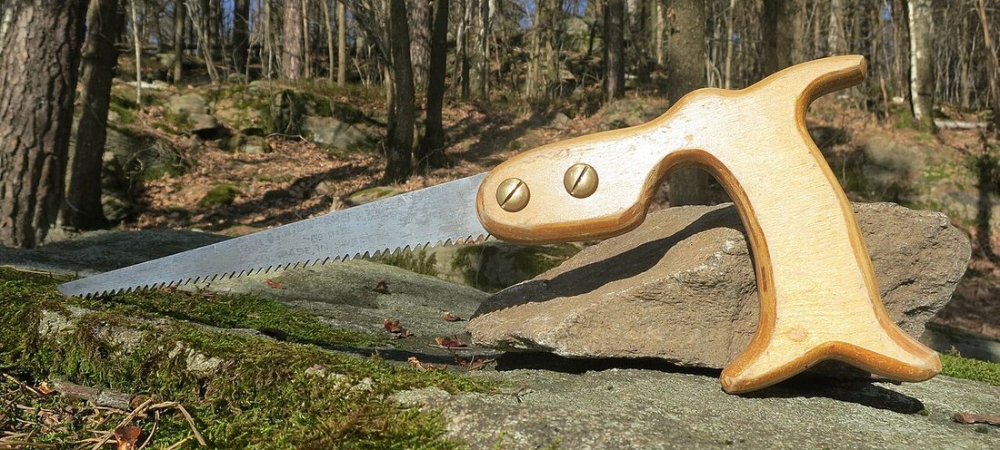
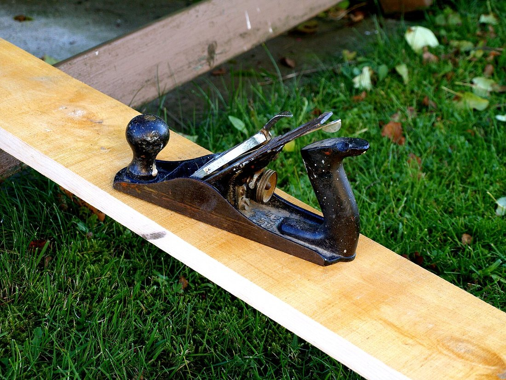
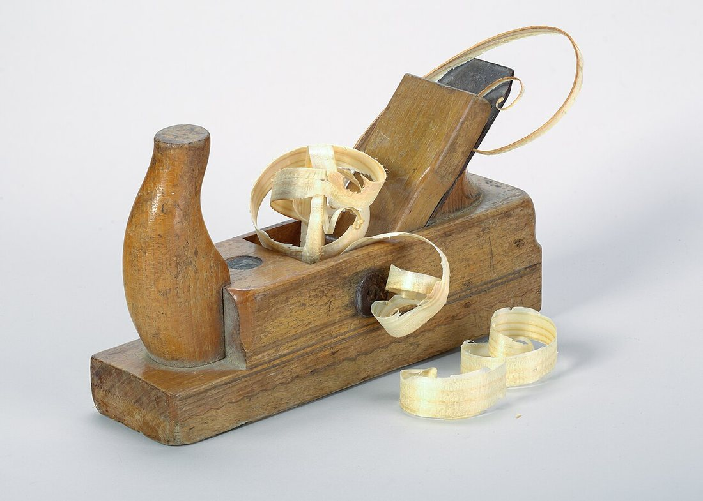
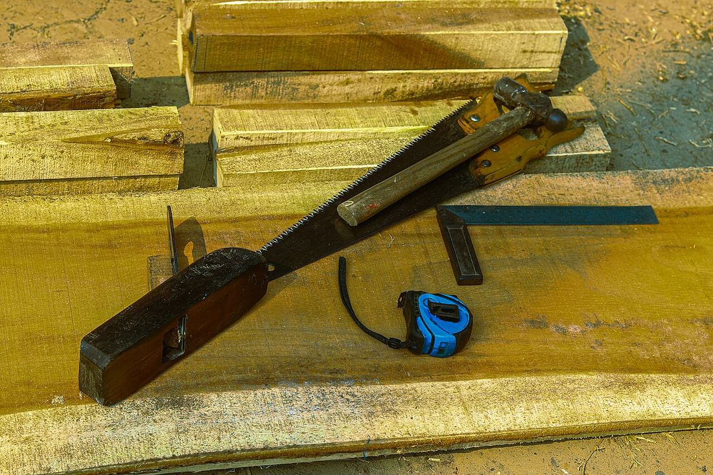

Көркем еңбек (ұлдар) · 2-бөлім · Ағаш өңдеу Art & Craft (Boys) · Section 2 · Woodworking Художественный труд (мальчики) · Раздел 2 · Обработка древесины
🪚 Ағашты қолмен өңдеу: аралау және жону
🪚 Hand Woodworking: Sawing and Planing
🪚 Ручная обработка дерева: пиление и строгание
Ара мен сүргі — тақтайды дәл өлшеп кесіп, бетін тегіс ететін негізгі қол құралдары. The saw and the plane — the core hand tools that cut a board to size and make its surface smooth. Пила и рубанок — главные ручные инструменты, чтобы отрезать доску по размеру и сделать поверхность гладкой.
Аралау (пиление) — ара тісінің қозғалысымен ағашты бөлшекке бөлу немесе артық бөлігін кесіп тастау. Жону (строгание) — сүргінің өткір пышағымен ағаштың бетінен жұқа жоңқа (стружка) алып, оны тегіс әрі дәл өлшемге келтіру. Бұл екеуі — ағаш ұстасының ең негізгі қол амалдары: алдымен дайындаманы арамен кесіп аламыз, содан кейін сүргімен бетін тегістеп, өлшемге дәл келтіреміз. Дұрыс ұсталған құрал, дене қалпы және өлшеу мұқияттылығы жұмыс сапасын да, қауіпсіздікті де айқындайды. Sawing means dividing wood into parts, or cutting off a surplus piece, with the moving teeth of a saw. Planing means removing a thin shaving from the surface of the wood with the sharp blade of a plane, to make it flat and accurate to size. These two are the most basic hand operations of a woodworker: first we cut the blank to length with a saw, then we level its surface and bring it to size with a plane. A correctly held tool, the right posture and careful measuring decide both the quality of the work and your safety. Пиление — это разделение древесины на части или отрезание лишнего движением зубьев пилы. Строгание — это снятие тонкой стружки с поверхности дерева острым ножом рубанка, чтобы сделать её ровной и точной по размеру. Это две самые основные ручные операции столяра: сначала мы отпиливаем заготовку по длине пилой, затем выравниваем её поверхность и доводим до размера рубанком. Правильно удерживаемый инструмент, верная поза и аккуратность в измерениях определяют и качество работы, и безопасность.
Құралдар мен үдеріс The Tools and the Process Инструменты и процесс
🔍 Үлкейту үшін суретті басыңыз. 🔍 Tap a photo to enlarge it. 🔍 Нажмите на фото, чтобы увеличить.



Аралау: қадам-қадам Sawing: step by step Пиление: шаг за шагом
Белгілеу.Mark out.Разметка. Сызғыш пен бұрышпен кесу сызығын анық сызамыз.Draw a clear cut line with a rule and a square.Чертим чёткую линию реза по линейке и угольнику.
Бекіту.Clamp.Закрепление. Дайындаманы верстак пен қысқышпен мықтап бекітеміз.Fix the blank firmly on the bench with a clamp.Прочно крепим заготовку на верстаке струбциной.
Бастау.Start the kerf.Запил. Бас бармақты тіреп, баяу қозғалыспен таяз ойық жасаймыз.Guide with the thumb and make a shallow groove with slow strokes.С опорой большого пальца лёгкими движениями делаем неглубокий пропил.
Аралау.Saw.Пиление. Араны 45°-қа жуық ұстап, бүкіл жүзбен ұзын, бірқалыпты қозғалыс жасаймыз.Hold the saw near 45°, use the whole blade with long, even strokes.Держим пилу около 45°, работаем всем полотном длинными ровными движениями.
Аяқтау.Finish.Завершение. Соңында қысымды азайтып, түсіп қалмауы үшін бөлікті қолмен ұстаймыз.Near the end ease the pressure and support the offcut so it does not break off.В конце ослабляем нажим и придерживаем отрезаемый кусок, чтобы он не отломился.

«Жеті рет өлше — бір рет кес»"Measure seven times, cut once"«Семь раз отмерь — один раз отрежь»
Жону: қадам-қадам Planing: step by step Строгание: шаг за шагом
Пышақты реттеу.Set the blade.Настройка ножа. Пышақ табаннан өте аз ғана шығуы тиіс — әйтпесе жоңқа қалың әрі тегіс емес болады.The blade should project just a hair below the sole — otherwise the shaving is thick and uneven.Нож должен выступать из подошвы совсем чуть-чуть — иначе стружка будет толстой и неровной.
Талшық бойымен.Along the grain.Вдоль волокон. Әрдайым ағаш талшығы бағытымен жонамыз, кері бағытта ағаш «жыртылады».Always plane in the direction of the grain; against it the wood tears out.Строгаем всегда по направлению волокон; против — древесина «задирается».
Дене қалпы.Posture.Поза. Бір аяқты алға қойып, дене салмағымен бірқалыпты итереміз.Put one foot forward and push evenly using your body weight.Одну ногу ставим вперёд и толкаем равномерно, помогая весом тела.
Қысым.Pressure.Нажим. Басында алдыңғы тұтқаға, соңында артқы сапқа күш саламыз — шеттері «дөңгеленбейді».Press the front knob at the start and the rear handle at the end — so the ends do not round over.В начале жмём на передний грибок, в конце — на заднюю ручку, чтобы края не «заваливались».
Тексеру.Check.Проверка. Тегістікті сызғышпен немесе көзбен жарық арқылы тексереміз.Check flatness with a straightedge or by eye against the light.Ровность проверяем линейкой или на просвет глазом.
Сақтау.Store it.Хранение. Сүргіні бүйіріне жатқызамыз, пышақ үстелге тимеуі керек.Lay the plane on its side so the blade does not touch the bench.Рубанок кладём на бок, чтобы нож не касался стола.
Аралау мен жонуды салыстыру Sawing vs. Planing Сравнение пиления и строгания
| Признак | Пиление | Строгание |
|---|---|---|
| Инструмент | Пила (ножовка, лучковая) | Рубанок (шерхебель, фуганок) |
| Задача | Разделить, отрезать по размеру | Выровнять и довести поверхность |
| Что снимается | Опилки (пропил) | Стружка (тонкий слой) |
| Направление | Поперёк или вдоль волокон | Только вдоль волокон |
| Результат | Деталь нужной длины | Гладкая ровная плоскость |
| Когда | Первый этап — раскрой | После пиления — доводка |
| Белгісі | Аралау | Жону |
|---|---|---|
| Құрал | Ара (ножовка, садақ ара) | Сүргі (шерхебель, фуганок) |
| Міндеті | Бөлу, өлшемге кесу | Бетті тегістеу, дәлдеу |
| Не алынады | Үгінді (пропил) | Жоңқа (жұқа қабат) |
| Бағыты | Талшыққа көлденең не бойлай | Тек талшық бойымен |
| Нәтиже | Керекті ұзындықтағы бөлшек | Тегіс әрі түзу жазықтық |
| Қашан | Бірінші кезең — кесу | Аралаудан кейін — әрлеу |
| Feature | Sawing | Planing |
|---|---|---|
| Tool | Saw (hand saw, bow saw) | Plane (scrub, jointer) |
| Goal | Divide, cut to size | Level and finish the surface |
| What is removed | Sawdust (the kerf) | Shavings (a thin layer) |
| Direction | Across or along the grain | Only along the grain |
| Result | A part of the right length | A flat, smooth plane |
| When | First stage — cutting out | After sawing — finishing |
Қауіпсіздік ережелері Safety Rules Правила безопасности
Тек жарамды құрал.Sound tools only.Только исправный инструмент. Сабы шайқалған ара мен мұқал пышақ қауіпті.A loose handle or a dull blade is dangerous.Шатающаяся ручка и тупой нож опасны.
Қолды алыс ұста.Keep hands clear.Руки — в стороне. Қолды кесу сызығынан және жүзден алшақ ұстаймыз.Keep your hand away from the cut line and the blade.Держим руку вдали от линии реза и лезвия.
Берік бекіт.Clamp firmly.Надёжно закрепляй. Дайындаманы қолмен ұстамай, қысқышпен бекітеміз.Hold the blank with a clamp, not just by hand.Заготовку держим струбциной, а не рукой.
Көзді қорға.Protect your eyes.Береги глаза. Үгінді ұшатын жұмыста көзілдірік киеміз.Wear goggles when dust and chips fly.Надеваем очки, когда летят опилки и стружка.
Орынды таза ұста.Keep it tidy.Чистое рабочее место. Жоңқа мен үгінді жұмыс соңында жинаймыз.Sweep up shavings and dust after work.Стружку и опилки убираем по окончании работы.
Жүзді ұстама.Don't touch the edge.Не трогай лезвие. Пышақтың өткірлігін саусақпен тексермейміз.Never test sharpness with a finger.Остроту не проверяем пальцем.
Шебердің кеңестері A Master's Tips Советы мастера
📏 Қор қалдырLeave an allowanceОставляй припуск
Сызықтан 1–2 мм сыртынан араламыз — қалғанын сүргімен дәлдейміз.Saw 1–2 mm outside the line — the rest is brought to size with the plane.Пилим на 1–2 мм снаружи линии — остаток доводим рубанком.
🪵 Талшықты оқыRead the grainЧитай волокна
Жонар алдында ағаштың талшық бағытын анықтап ал.Before planing, find which way the grain runs.Перед строганием определи направление волокон.
🔧 Өткір ұстаKeep it sharpДержи острым
Өткір пышақ аз күшпен таза кеседі әрі қауіпсіз.A sharp blade cuts cleanly with less force and is safer.Острый нож режет чисто с меньшим усилием и безопаснее.
💬 Қорытынды 💬 In a nutshell 💬 Главное
Ара ағашты өлшемге бөледі, ал сүргі оның бетін тегіс әрі дәл етеді. Алдымен дәл өлшеп белгілейміз, берік бекітеміз, талшық бағытын ескереміз және құралды өткір ұстаймыз. Сонда дайындама дәл, беті тегіс, ал жұмыс қауіпсіз болады. The saw divides wood to size, and the plane makes its surface flat and accurate. First we measure and mark precisely, clamp firmly, mind the grain direction and keep the tool sharp. Then the part is accurate, the surface is smooth, and the work is safe. Пила делит дерево по размеру, а рубанок делает его поверхность ровной и точной. Сначала точно измеряем и размечаем, надёжно закрепляем, учитываем направление волокон и держим инструмент острым. Тогда деталь получается точной, поверхность гладкой, а работа — безопасной.